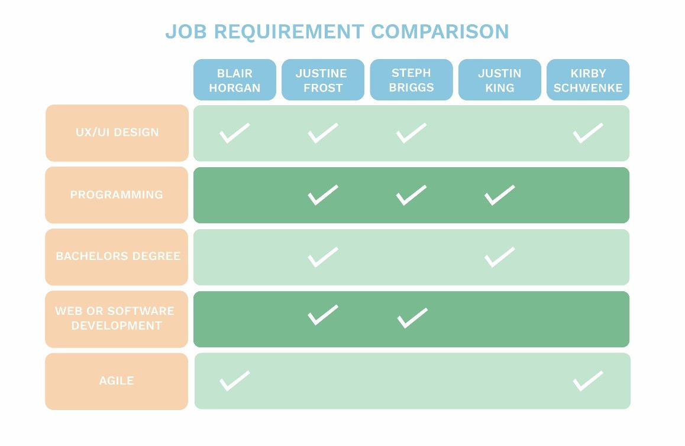
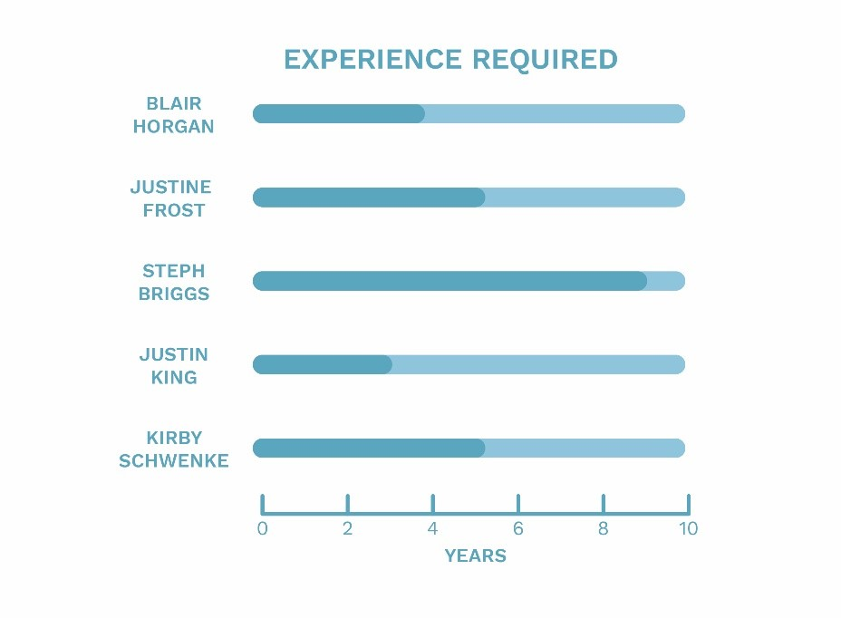

Our Ideal Jobs in the IT Industry



Overall group members ideal jobs are highly technical with a requirement of at least 3 years of experience to obtain these jobs as was identified in figure 3. Group members have a high level of interest in UI/UX Design and Programming with several careers identifying these areas as key components of this selection of jobs, a visual representation of this comparison can be found in figure 2. Steph Briggs and Justine Frost careers have a high degree of similarity with both requiring knowledge of programming as well as web/software development, interestingly a software engineer of C++ differs slightly in its requirement for a bachelor’s degree. Kirby Schwenke and Blair Horgan both have interests in UI/UX design, and the components of each job advert are similar particularly in its requirement of agility, however, requiring a different level of experience. As Justin King’s ideal job steers away from software development and works more with hardware there is a different set of skills required with more kinesthetic skills required, however the basic element of knowledge around programming remains.